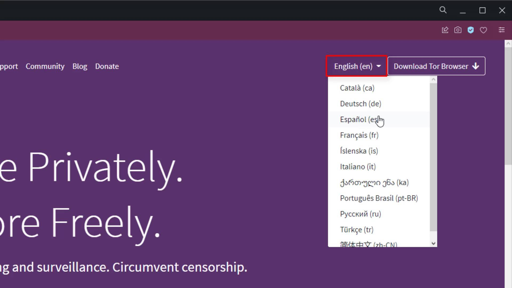
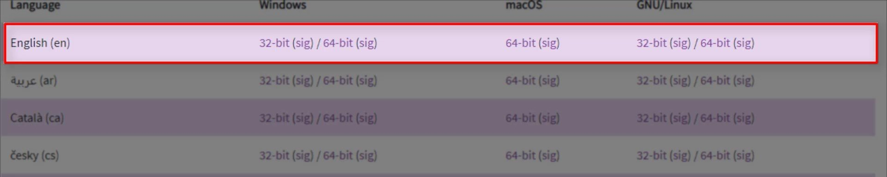
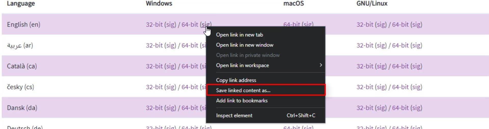
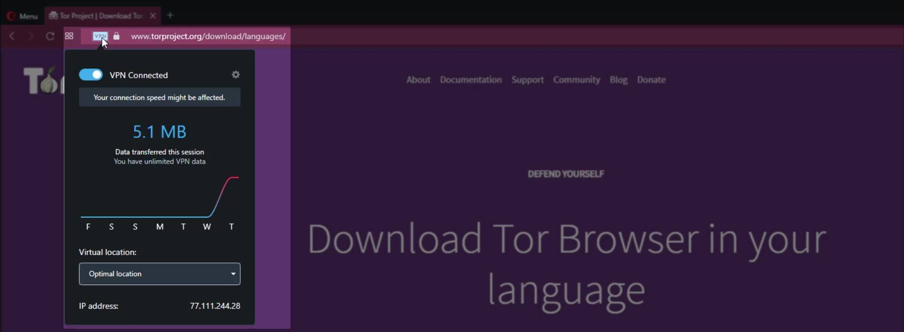

Downloading Tor Browser
You have multiple alternatives to download the Tor browser. All these alternatives exist so that you can securely download the Tor browser over any network where access is restricted. Let's take a look at the download alternatives in order.
Downloading from the Tor Official Website
The most basic and common method used to download the Tor browser is to download the version suitable for your system from its official website.
To download browser, firstly visit to the torproject.org . If you want, you can choose the language of the website as your native language and understand what is written more clearly.

Click the "Download Tor Browser" button to see the download options.

As you can see on the page that opens, there are multiple download options. Click on "Download in another language or platform" for more options .

As you can see here, there are download links with multiple language options for multi-platforms. From here, just click on the link to download the appropriate version for your operating system. At this point, my suggestion to you is that you prefer the English installation package, which has a much more general use, rather than packages in other languages that you know or can be associated with you. In this way, you can make your real identity much more uncertain with a much wider browser version. You can still choose the language pack you want if you think you will have difficulty or if you prefer for use where your anonymity is not so important. Your native language can be preferred to use at least until you get used to the browser. Just click on the link to download the version suitable for the operating system you will install Tor Browser on. For example, since I will install it on a Windows 64 sixty four bit system, I click the link here.

And also, make sure to save the " signature " file of the installation file you downloaded, by right clicking on the link that " sig " and clicking " save link as ".

You will be using this signature file during the installation phase to test the safety of the setup file.
We discussed first download alternative. However, despite being the first, this is actually most prevented alternative. The country you are in or the internet service provider you use may have blocked the Tor project's websites. So, you may not have been able to access the Tor website while you were following this lecture. In this case, you can either use the second alternative download source or you can download from the website by using VPN. As a matter of fact, since I had trouble accessing the website while preparing this guide, I was able to show the processes by accessing the website through a simple VPN application installed in my browser.

So if you wish, only for download you can use simple VPN extensions that can be installed on browsers or you can try the second download method. Also by the way; I would like you to know that such free VPN services running on the browser are not secure and their keeps log your personal data. Apart from this, I recommend that you read the terms of use before using such free services and find out what information they collect about you.
Leaving aside the use of VPN for now, let's consider second alternative source.